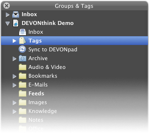

|
|
Groups & Tags |
|
The Groups & Tags panel, opened using Tools > Show Groups & Tags , gives you direct access to all open databases and their groups including the tags inside the special Tags group. Use it to drag items directly to a group or tag or to rearrange groups. You can also apply menu commands to selected items, e.g., Data > Open .  Depending on your Preferences, General tab, the Groups & Tags panel floats above all other windows, even in other applications. |